Related Goods Manager
The solution allows assigning related products to items (e.g., packaging), which are added to the document, and special items for which separate entries are created when posting the sales document, allowing for tracking (e.g., goods that the customer is obliged to return).
Related Products
Setup
To use the related products solution, enable the functionality in the Sales & Receivables setup:
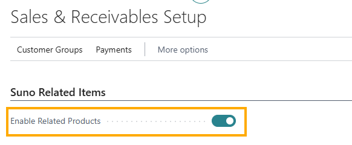
Create related product groups in the Related Product Groups table. This allows setting up related products for a single item according to different customer conditions.
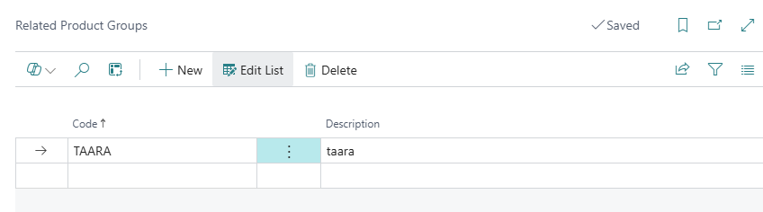
Assign the appropriate group to the customer whose orders should include related products.
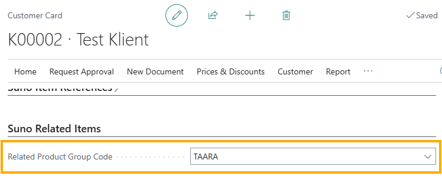
To link items, search for Related Products and describe the relationship between items, or open the related products page directly from the item card by clicking on the value in the Related Products field:
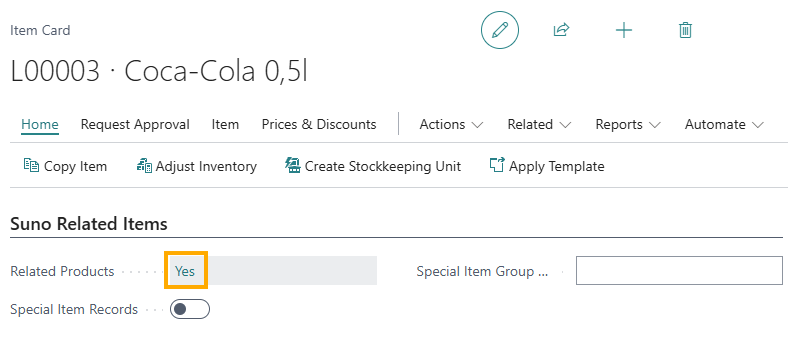
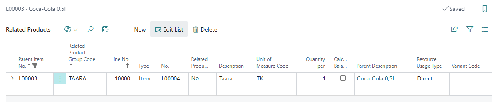
Parent Item No. - the item to which the related product should be added to the order.
Related Product Group Code - the related product group created to establish the relationship between the related product and the customer.
Line No. - automatically filled but can also be manually filled. Displayed on the sales order line.
Type - the item or resource you want to link.
No. - the number of the item or resource you want to link. The item does not have to be a stock item.
Related Products - the displayed field from the related product item card. Indicates whether the related product has its own related product.
Description - automatically filled from the item/resource card but can be overwritten. The description is taken from the Related Product table for the document.
Unit of Measure Code - the unit of measure for the related product. Automatically filled from the item card, can be changed if the unit of measure relationship is described on the item card for the related product.
Quantity per - the quantity applicable per one unit of the main item.
Parent Description - comes automatically from parent item card
Variant Code - related product variant
Using Related Products on Sales Orders and Sales Return Orders
When adding a customer sales order, the Related Product Group Code field is filled from the customer card:
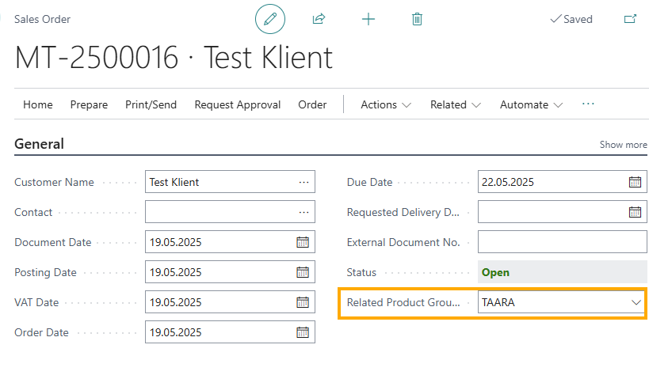
If necessary, the value can be removed from the Related Product Group Code field in the sales order header.
Related products are added to the sales order lines upon release, by using the Update Related Products function from the header ribbon or when printing the sales order layout.
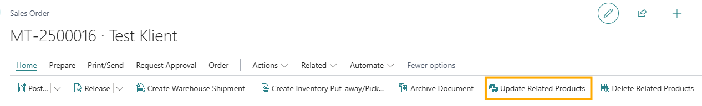
When reopening a released sales order or using the Delete Related Products button from the header ribbon, related products are removed from the sales order lines.
The Related Products checkbox field and the Related Product Line No. field from the related products setup appear on the sales order line for the related product.
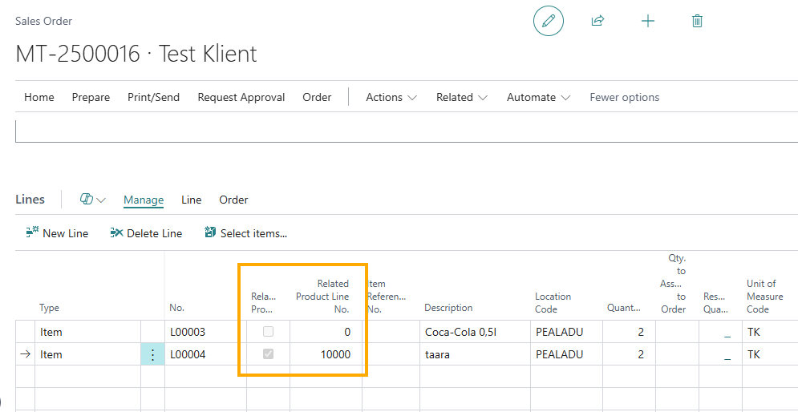
Changing the quantity of the main item also changes the quantity on the related product line.
When creating a sales order by copying a document, it is necessary to enable the Copy Attached Lines marker in the Copy Sales Document window so that related products from the source document are included.
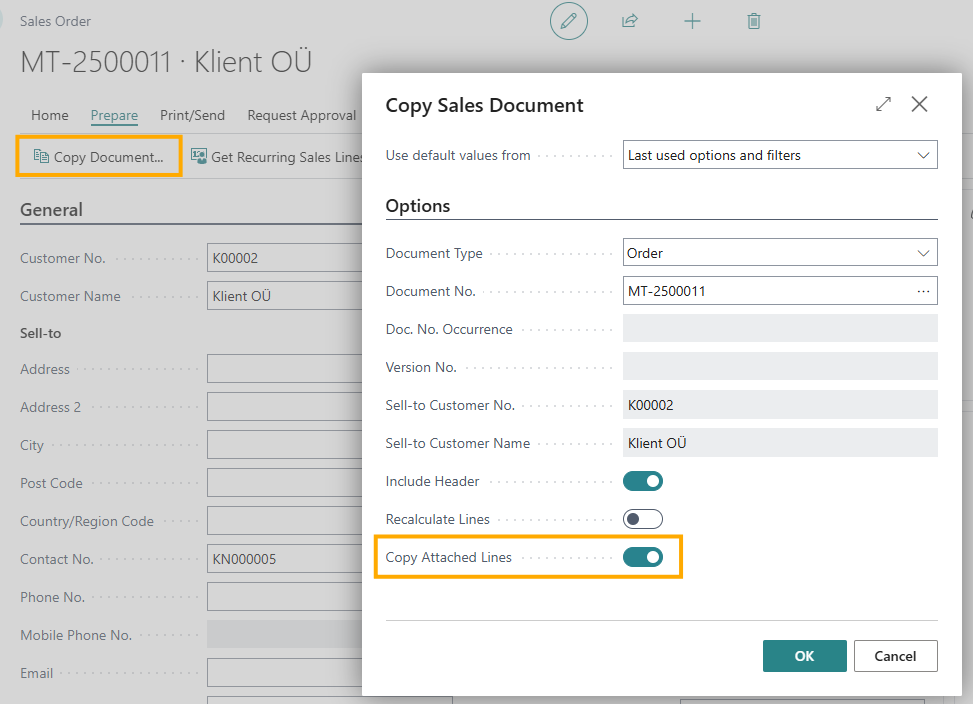
Using related products on sales return orders works the same way as on sales orders.
Special items
Setup
On the item card, enable the Special Items Entries marker and fill in the Special Item Group Code field (free text field) if necessary.
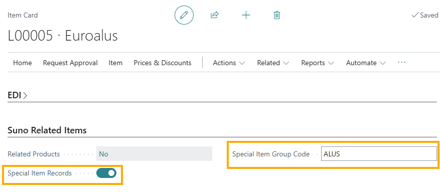
Special item can also be used as related products.
Tracking special item balances
When shipping a special item, a special item entry is created. Special item balances can be tracked through the customer card by selecting Related - History - Customer Special Item Balances/Customer Special Item Entries from the ribbon.
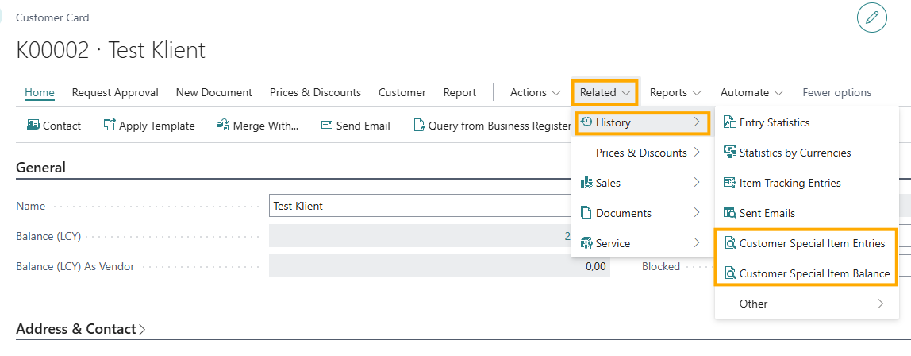
The Customer Special Item Entries page displays all shipments of items marked as special items. The special item group code assigned to the item is saved in the special item entries register, which can be filtered accordingly.
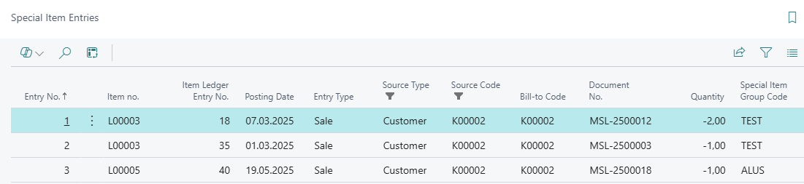
The Customer Special Item Balances page summarizes the quantities of special items. It is possible to track how many special items are expected to be returned by the customer.
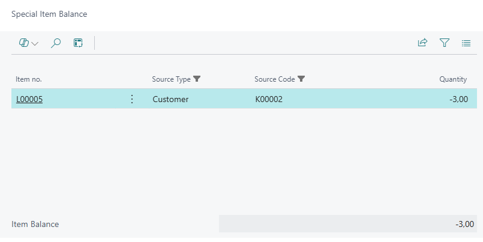
The return of items expected from the customer must be processed through a sales return order.